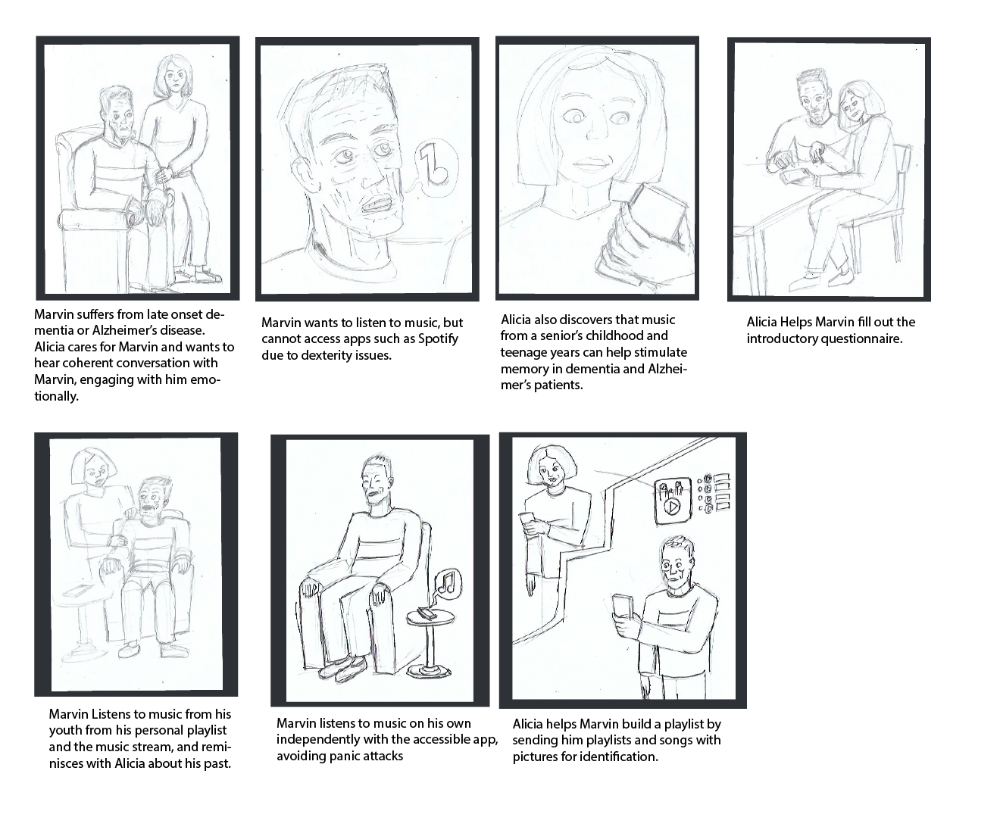

Sonnetto is a remote music performance application for users to play music across distances with other players without having to leave their home. Sonnetto was an application created for the senior user market, created as part of a team of three people. Co Creator and designer Joshua Job was responsible for much of the graphic and Application design on this team. Nicholas however was responsible for much of the User Experience design, and this included user interviews and annotations, wireframes to determine the features and layout, and story boarding and user journey mapping to understand the use cases of the application for their audience.
Initial interviews were held in person and online with several elderly and retired musicians where possible topics for the application were explored. Questions about their music playing and music listening habits were also asked to give an idea of the field we were working in. From the questions it was discovered that many older musicians started their interest in music somewhat later in life. We also discovered that many of them used several applications to aid them in music playing. The application Jamulus came up as an application used for remote get togethers of musicians. Sibalius also came up as a software for music composition, and Youtube as a program for music instruction for one interview subject.
Once initial interviews were complete and the data compiled the team produced sets of wire frames. Several ideas were explored here, and we can see that several concepts were explored for the application which were not used in the final design. It was eventually decided by team member Josh that the project would be a music composition app and musical instrument for elderly musicians that could no longer play a regular instrument, playing notes using a node system. This would not be the final design of the project, however it would be used as the go to direction for several months. Initial concepts for social media features seen in the wire frames I produced would eventually make it into the final product.

Our initial premise was that the node system would make it easier for users to compose music by allowing them to play music at a slow speed with low dexterity, and then play it back at a higher speed. Unfortunately the concept of the music player had to be dropped due to technical problems. We simply could not get the node based music player to work in a satisfactory manner in prototypes, and our instructor eventually told us to come up with a new concept.
At this point we scrambled to change directions in our project and several new ideas were considered in this direction. The first concept we came up with was for a music player that could be used for music therapy. This concept came from research into music therapy, where it was found that playing music from the patients youth could be used to sooth and stimulate memory in music therapy patients. A story board was created by me to explore this concept further, and in this story board you can see a number of concepts being explored. This included the use of features which could be utilized by a relative or loved one of a patient to set playlists for users remotely through their account. An introductory survey would also be used in the application in order to set aspects of the therapy application such as the date and genre of music sampled.This concept too would also be scraped however due to complications with our concept’s topic. Our team member Josh conducted an interview with a music therapist, and found that the field involved a much more hands on and personal approach than what would be provided by our program. Further, the type of music therapy we were exploring was used for patients with dementia, and discovering this group of patients for our research was considered to be outside the scope of our project.
Going back to the our research, we looked at our initial research notes and discovered that we could make improvements on one of the applications mentioned by our research participants from our initial interviews. We focused particularly on the mention of the application Jamulus, which was highly praised by one of our users but who also pointed out several frustrations with this application. Our concept was to have a version of this application which would prevent many of the frustrations that the other provided. Jamulus operated through the creation of open rooms on a board, and our competing product would solve this by introducing a friends list, and other tools for limiting room membership such as accept and reject messages to make a more private and secure version of the application. I made another story board for this concept of the application, which shows the friends feature of the application and group jamming.
Once this new version of our application was prototyped, it was time to test our program again with users. Again we tested on elderly musicians who were our particular target audience for this program. Feedback was generally positive although one user had an issue with the fact that our application was designed for the cellphone. According to them the latency and lag on a cellular network would make the program unusable on that type of device. Another user mentioned issues with the home screen icon selection option, which they had trouble finding. We made minor adjustments to the application but could sadly not convert it into a computer application in time.